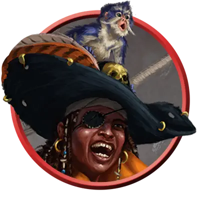

Адмирал пиратов
Pirate Admiral
Средний или Маленький Гуманоид, Нейтральный

Класс Защиты 20 Инициатива +10 (20)
Хиты 182 (28к8 + 56)
Скорость 30 футов
| мод | спас | ||
|---|---|---|---|
| СИЛ | 14 | +2 | +6 |
| ЛОВ | 22 | +6 | +10 |
| ТЕЛ | 14 | +2 | +2 |
| мод | спас | ||
|---|---|---|---|
| ИНТ | 12 | +1 | +1 |
| МДР | 14 | +2 | +6 |
| ХАР | 19 | +4 | +8 |
Чувства пассивное Восприятие 16
Языки Общий
Опасность 12 (8 400 опыта; БВ +4)
Действия
Мультиатака. Адмирал совершает три атаки Скимитаром или Пистолем в любой комбинации.
Скимитар. Бросок рукопашной атаки: +10, досягаемость 5 фт. Попадание: 16 (3к6 + 6) Рубящего урона плюс 7 (2к6) урона Ядом, и на цель воздействует один из следующих эффектов на выбор адмирала:
Потрясение. Цель Очарована адмиралом до начала следующего хода адмирала.
Отравление. Цель Отравлена до начала следующего хода адмирала.
Пистоль. Бросок дальнобойной атаки: +10, дистанция 30/90 фт. Попадание: 28 (4к10 + 6) Колющего урона.
Бонусные действия
Подбадривание (1/день). Адмирал выбирает вплоть до трёх других видимых им существ в пределах 30 футов. До начала следующего хода адмирала эти существа совершают с Преимуществом броски атаки и спасброски.
Реакции
Защитная стойка. Условие: По пирату попадает бросок рукопашной атаки, пока он держит оружие. Эффект: Пират получает бонус +4 к КЗ против этой и всех последующих рукопашных атак до начала своего следующего хода, что может приводить к их промахам.
Бонус мастерства +4
Среда обитания Любая
Сокровища Личные, Инструментальные
Пираты
Флибустьеры и авантюристы
Понятие «пират» объемлет собой великое множество мореходов: здесь и безжалостные грабители, и упрямые каперы, и охотники за проклятыми сокровищами, и прочие авантюристы, чающие славы и богатства посреди солёных волн.
Пираты могут выступать как союзниками, так и врагами, а порой — играть роль непредсказуемой «тёмной лошадки», сочетая в себе все эти черты разом. Хотя они и предстают сущим бичом для купцов и прибрежных поселений, им ведомы тайны морей и способы избегать угроз, таящихся в пучине. Наиболее дерзкие и необычные пираты устремляют взор дальше линии горизонта. Они используют летучие корабли, астральные челноки, межпланарные суда или иной, ещё более диковинный транспорт, дабы грабить и исследовать пределы невообразимых миров.
Пиратские флаги
Дабы сеять ужас в сердцах противников и множить зловещую молву о себе, каждая пиратская команда поднимает над мачтами свой отличительный стяг. Совершите два броска по таблице «Пиратский флаг» для вдохновения или выберите сами, под каким знаменем ходит пиратская команда.
Пиратский флаг
| 1к8 | Флаг изображает… | Но не просто, а с… |
| 1 | Буканьера | Треуголкой |
| 2 | Дракона | Костями крест-накрест |
| 3 | Исчадие | Скрещенными клинками |
| 4 | Козла | Глазной повязкой |
| 5 | Кракена | Разрядами молнии |
| 6 | Русалку | Пивной кружкой |
| 7 | Череп | Татуировкой |
| 8 | Кита | Сундуком сокровищ |
Адмиралы пиратов повелевают целыми флотилиями. Они пускаются в самые дерзкие предприятия: бросают вызов военным эскадрам прибрежных держав, выходят на охоту за легендарными морскими тварями или выкраивают собственные пиратские баронства. Часто они направляют свои армады из тайных крепостей-убежищ, где хранят награбленные сокровища либо карты, указующие путь к надёжно схороненным богатствам. Некоторые адмиралы заключают союзы со служителями океанических божеств, обитателями глубин и морскими чудовищами — а также с такими же, как они сами, отпетыми негодяями.